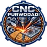

CNC PURWODADI
Layanan Jasa CNC
Presisi, Rapi, & Profesional
Kami melayani pemotongan, ukiran, dan grafir dengan mesin CNC berteknologi tinggi untuk berbagai jenis material dengan hasil cepat, akurat, dan rapi.
CNC Fiber Laser
Potong Plat Logam
CNC Router
Ukir & Grafir Non-Logam
Mesin Berteknologi Tinggi
Dukungan mesin modern untuk pemotongan logam presisi dan ukiran non-logam detail tinggi.
CNC FIBER LASER CUTTING
Potong plat logam dengan presisi tinggi dan hasil potongan halus tanpa gerinda.
Cocok Untuk Material:
- Stainless Steel
- Mild Steel / Baja
- Aluminium
- Tembaga / Copper
- Kuningan / Brass
- Galvanis, dll
CNC ROUTER
Potong, ukir, dan grafir berbagai material non-logam dengan detail tinggi.
Cocok Untuk Material:
- Kayu / MDF / Multiplek
- Acrylic / Akrilik
- PVC Board
- Aluminium Composite Panel (ACP)
- Foam Board
- Karet / Kulit Sintetis / Kain
- Dan material non-logam lainnya
Material, Keunggulan & Aplikasi
Spesifikasi lengkap kemampuan pengerjaan CNC di cncpurwodadi.com
MATERIAL
- Stainless Steel
- Mild Steel / Baja
- Aluminium
- Tembaga / Kuningan
- Kayu / MDF / Multiplek
- Acrylic / Akrilik
- PVC Board & ACP
- Karet, Kulit Sintetis, Kain, dll
KEUNGGULAN
- Presisi tinggi & potongan rapi
- Hasil ukiran detail
- Pengerjaan cepat & efisien
- Menerima desain custom
- Pesanan satuan & partai besar
- Harga kompetitif
APLIKASI
- Interior & Eksterior
- Advertising & Signage
- Industri & Komponen
- Furniture Modern
- Kerajinan & Souvenir
- Dekorasi & Partisi
Portofolio Pengerjaan
Dokumentasi hasil pengerjaan komponen presisi, ornamen facade, partisi kayu/PVC, dan signage akrilik.

Pagar & Gate Laser Cutting Logam

Potong High Presisi Plat Besi & Baja

Hasil Ukir Kayu & MDF Detail Tinggi

Ornamen Jendela & Partisi Kayu Custom

Ukiran Relief & Ornamen Kayu

Mesin CNC Router & Laser Modern

Workshop & Area Kerja CNC Purwodadi
Signage & Ornamen Ukir Presisi
Kunjungi Workshop Kami
Langsung berkunjung ke bengkel kerja kami atau konsultasi online.
Alamat Workshop
Jl Truko-Jeketro, Desa Sambung, Kec. Godong, Jawa Tengah
Telp / WhatsApp
085293291425